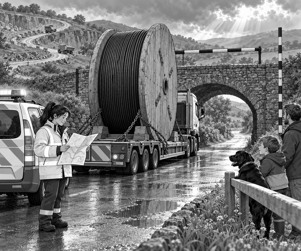

A storm had swept over Pine Hill.
It shook the trees and snapped a power cable.
The repair team needed a new cable before night.
At the truck yard stood the answer.
It was a giant wooden drum.
Thick black cable curled around it.
The drum sat on a long, low trailer.
Driver Mia checked every chain.
Dad checked the wooden blocks under the drum.
Tom and Scout watched from behind the yard fence.
“Why does it need blocks?” asked Tom.
“A round load wants to roll,” said Dad.
“The blocks are called chocks. They stop it moving.”
Load fact: Heavy round loads need strong chocks and chains. Chocks block the wheels or drum, while chains hold the load down.
Mia climbed into the big truck.
Dad drove the small escort vehicle.
Tom and Scout rode safely inside with him.
The convoy moved slowly towards Pine Hill.
Rumble. Rumble. Rumble.
Then an old stone bridge appeared.
Mia stopped well before its arch.
Beside the road stood a height bar.
Dad compared it with the tall drum.
The top of the drum was higher.
“It will not fit,” said Tom.
Scout gave one worried woof.
“Good drivers measure before they move,” said Mia.
Bridge fact: Drivers must know the height of a tall load. They compare it with the limit before going under a bridge.
Mia opened her route map.
A longer road curled through the old quarry.
It had no low bridge.
The convoy turned back and took the quarry road.
Rain had made the track muddy.
The road climbed in a tight bend.
Mia chose a low gear.
The big engine pulled with a deep growl.
Dad spoke on the radio.
“Steady. The trailer is clear.”
The front wheels reached the bend.
The long trailer followed.
Its back wheels came close to a rock.
“A little wider,” called Dad.
Mia turned gently.
The wheels rolled past with room to spare.
At last, the road became firm.
The repair crew waved from the hilltop.
The giant drum had arrived.
Tom patted Scout.
“The short road was wrong,” he said.
“But the careful road got the cable there.”
That evening, warm lights shone across Pine Hill.
Scout curled up beside Tom and fell asleep.
The giant cable drum was empty.
Its mission was complete.
1. What did Mia's truck carry?
2. Why did the convoy avoid the stone bridge?
3. What held the round drum still?